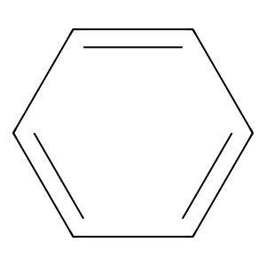
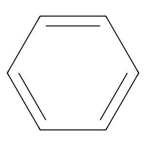
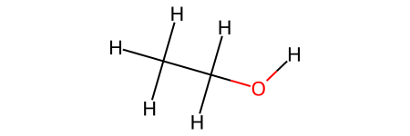
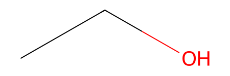
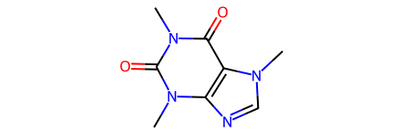

from rdkit import Chem
from rdkit.Chem import Draw
# Read a SMILES string
mol = Chem.MolFromSmiles('c1ccccc1')
# Generate a 2D depiction
mol_image = Draw.MolToImage(mol)
# Display the image
mol_image
Cheminformatics is a interdisciplinary field that combines chemistry, computer science, and information technology. It involves the application of computational techniques to handle and analyze chemical data, such as molecular structures, properties, and reactions. Cheminformatics plays a crucial role in various areas of chemistry, including drug discovery, materials science, and environmental research.
In the era of big data and high-throughput experimentation, cheminformatics has become an essential tool for chemists. It enables efficient data management, analysis, and visualization of large chemical datasets. Additionally, cheminformatics provides powerful methods for virtual screening, molecular modeling, and property prediction, accelerating the discovery process and reducing experimental costs.
RDKit (The RDKit: Open-Source Cheminformatics Software) is a popular open-source cheminformatics toolkit written in C++ and Python. It provides a wide range of functionalities for working with chemical data, including:
To start using RDKit in Python, you need to install the rdkit package (the code has been tested with rdkit=2023.9.5). You can install it using pip or conda package managers, here is how you can do it with pip:
pip install rdkitOnce installed, you can import the RDKit modules in your Python scripts:
from rdkit import ChemHere’s a simple example that reads a SMILES string, generates a 2D molecular depiction, and displays it:
from rdkit import Chem
from rdkit.Chem import Draw
# Read a SMILES string
mol = Chem.MolFromSmiles('c1ccccc1')
# Generate a 2D depiction
mol_image = Draw.MolToImage(mol)
# Display the image
mol_image
This is just a glimpse into the capabilities of RDKit. With its extensive documentation and active community, you can explore more advanced features and applications, such as virtual screening, QSAR modeling, and reaction transformation.
If you’re new to cheminformatics and RDKit, here are some useful resources to get you started:
With the power of cheminformatics and RDKit, you can unlock new possibilities in chemical research and discovery.
Although it’s not recommended for production code, you can create an ethanol molecule from scratch using RWMol:
# import rdkit
from rdkit import Chem
# Create an empty molecule
mol = Chem.RWMol()
# Add atoms to the molecule
mol.AddAtom(Chem.Atom(6)) # Carbon atom
mol.AddAtom(Chem.Atom(6)) # Carbon atom
mol.AddAtom(Chem.Atom(8)) # Oxygen atom
mol.AddAtom(Chem.Atom(1)) # Hydrogen atom
mol.AddAtom(Chem.Atom(1)) # Hydrogen atom
mol.AddAtom(Chem.Atom(1)) # Hydrogen atom
mol.AddAtom(Chem.Atom(1)) # Hydrogen atom
mol.AddAtom(Chem.Atom(1)) # Hydrogen atom
mol.AddAtom(Chem.Atom(1)) # Hydrogen atom
# Add bonds between atoms
mol.AddBond(0, 1, Chem.BondType.SINGLE) # Single bond between two carbon atoms
mol.AddBond(1, 2, Chem.BondType.SINGLE) # Single bond between carbon and oxygen atoms
mol.AddBond(0, 3, Chem.BondType.SINGLE) # Single bond between carbon and hydrogen atoms
mol.AddBond(0, 4, Chem.BondType.SINGLE) # Single bond between carbon and hydrogen atoms
mol.AddBond(0, 5, Chem.BondType.SINGLE) # Single bond between carbon and hydrogen atoms
mol.AddBond(1, 6, Chem.BondType.SINGLE) # Single bond between carbon and hydrogen atoms
mol.AddBond(1, 7, Chem.BondType.SINGLE) # Single bond between carbon and hydrogen atoms
mol.AddBond(2, 8, Chem.BondType.SINGLE) # Single bond between carbon and hydrogen atoms
# # Convert the RWmol to an RDKit molecule
# rdkit_mol = mol.toRWMol()
mol
Within RDKit, molecules are represented as mol objects.
It’s generally more convenient to use SMILES or other file formats to create mol objects. This was just to show you how cumbersome creating molecules from scratch would be.
Simplified Molecular Input Line Entry System (SMILES) is a linear notation system (plain text) used to represent molecular structures in a compact and human-readable form. It is widely used in computational chemistry, cheminformatics, and related fields.
The SMILES notation provides a way to represent the connectivity and structural features of molecules using a linear sequence of characters, symbols, and numbers. It encodes information about the atoms, bonds, rings, aromaticity, and other molecular features in a standardized way. Here are some key features of SMILES:
=, triple #, or aromatic).() are used to indicate branching in the molecular structure.1 ... 1 to indicate the atoms involved in the ring.@ and @@ and double bond configurations \ ... \ and / ... /.More on the SMILES notation can be found in the OpenSMILES specification and Daylight.
SMILES notation is widely used for storing and exchanging molecular information in databases, computational tools, and chemical software. It is a compact and efficient way to represent molecular structures, facilitating various tasks such as substructure searching, similarity calculations, and molecular property predictions.
SMILES was invented in the late 1980s by David Weininger, a chemist working for the U.S. Environmental Protection Agency (EPA). The development of SMILES was motivated by the need for a simple and efficient way to represent and store chemical structures in computer databases. Prior to SMILES, other linear notations for chemical structures existed, such as the Wiswesser Line Notation (WLN) and the IUPAC nomenclature system. However, these systems were often complex, difficult to read, and not well-suited for computational purposes.
In 1986, David Weininger published a paper titled “SMILES, a Chemical Language and Information System. 1. Introduction to Methodology and Encoding Rules” in the Journal of Chemical Information and Computer Sciences. In this paper, he introduced the SMILES notation and described the rules and algorithms for encoding and decoding molecular structures using this system. The key principles behind the design of SMILES were:
After its initial publication, SMILES gained widespread adoption in the chemical informatics community due to its simplicity, versatility, and compatibility with various software tools and databases. It became a de facto standard for representing and exchanging molecular structures in computational chemistry and related fields.
RDKit provides an easy way to create molecules from SMILES strings:
from rdkit import Chem
# Create molecule from SMILES
mol = Chem.MolFromSmiles('CCO')
mol
SMILES strings can be obtained from various sources, such as:
Many online tools and resources are available for converting molecular structures to SMILES format.
It’s important to note that the same molecular structure can be represented by different SMILES strings. For example, c1ccccc1, C1=CC=CC=C1 and c(c1)cccc1 represent the same benzene molecule.
To ensure a unique and consistent representation of a molecular structure, RDKit provides a canonicalization function:
from rdkit import Chem
# Create molecule from SMILES
mol = Chem.MolFromSmiles('C1=CC=CC=C1')
# Get canonical SMILES
canonical_smiles = Chem.MolToSmiles(mol)
canonical_smiles'c1ccccc1'Canonicalization is essential for tasks like searching and database indexing.
RDKit supports various molecular file formats for input and output. You can export a molecule to different formats using the appropriate writer function:
from rdkit import Chem
# Create molecule from SMILES
mol = Chem.MolFromSmiles('CN1C=NC2=C1C(=O)N(C(=O)N2C)C')
# Export to different formats
mol_sdf = Chem.MolToMolBlock(mol) # SDF format
print(mol_sdf)
RDKit 2D
14 15 0 0 0 0 0 0 0 0999 V2000
2.7760 0.0000 0.0000 C 0 0 0 0 0 0 0 0 0 0 0 0
1.2760 0.0000 0.0000 N 0 0 0 0 0 0 0 0 0 0 0 0
0.3943 1.2135 0.0000 C 0 0 0 0 0 0 0 0 0 0 0 0
-1.0323 0.7500 0.0000 N 0 0 0 0 0 0 0 0 0 0 0 0
-1.0323 -0.7500 0.0000 C 0 0 0 0 0 0 0 0 0 0 0 0
0.3943 -1.2135 0.0000 C 0 0 0 0 0 0 0 0 0 0 0 0
0.7062 -2.6807 0.0000 C 0 0 0 0 0 0 0 0 0 0 0 0
2.1328 -3.1443 0.0000 O 0 0 0 0 0 0 0 0 0 0 0 0
-0.4086 -3.6844 0.0000 N 0 0 0 0 0 0 0 0 0 0 0 0
-1.8351 -3.2209 0.0000 C 0 0 0 0 0 0 0 0 0 0 0 0
-2.9499 -4.2246 0.0000 O 0 0 0 0 0 0 0 0 0 0 0 0
-2.1470 -1.7537 0.0000 N 0 0 0 0 0 0 0 0 0 0 0 0
-3.5736 -1.2902 0.0000 C 0 0 0 0 0 0 0 0 0 0 0 0
-0.0967 -5.1517 0.0000 C 0 0 0 0 0 0 0 0 0 0 0 0
1 2 1 0
2 3 1 0
3 4 2 0
4 5 1 0
5 6 2 0
6 7 1 0
7 8 2 0
7 9 1 0
9 10 1 0
10 11 2 0
10 12 1 0
12 13 1 0
9 14 1 0
6 2 1 0
12 5 1 0
M END
And with 3D coordinates:
from rdkit import Chem
from rdkit.Chem import AllChem # you need to import additional functionality for 3D
# Create molecule from SMILES
mol = Chem.MolFromSmiles('CN1C=NC2=C1C(=O)N(C(=O)N2C)C')
mol = Chem.AddHs(mol) # Adding explicit Hydrogen atoms (optional)
AllChem.EmbedMolecule(mol) # Needed for 3D coordinates
mol_sdf3d = Chem.MolToMolBlock(mol) # SDF format with 3D coordinates
print(mol_sdf3d)
# Save the molecule to a file
with open("caffeine_3d.sdf", "w") as file:
file.write(mol_sdf3d)
RDKit 3D
24 25 0 0 0 0 0 0 0 0999 V2000
3.1953 0.6830 -0.2178 C 0 0 0 0 0 0 0 0 0 0 0 0
2.1441 -0.2991 -0.2633 N 0 0 0 0 0 0 0 0 0 0 0 0
2.2143 -1.6078 -0.4670 C 0 0 0 0 0 0 0 0 0 0 0 0
0.9789 -2.1554 -0.4293 N 0 0 0 0 0 0 0 0 0 0 0 0
0.0983 -1.1675 -0.1950 C 0 0 0 0 0 0 0 0 0 0 0 0
0.8334 -0.0022 -0.0912 C 0 0 0 0 0 0 0 0 0 0 0 0
0.1596 1.1816 0.1524 C 0 0 0 0 0 0 0 0 0 0 0 0
0.7952 2.2561 0.2522 O 0 0 0 0 0 0 0 0 0 0 0 0
-1.1774 1.2009 0.2853 N 0 0 0 0 0 0 0 0 0 0 0 0
-1.8632 0.0526 0.1792 C 0 0 0 0 0 0 0 0 0 0 0 0
-3.1148 0.0834 0.3055 O 0 0 0 0 0 0 0 0 0 0 0 0
-1.2387 -1.1335 -0.0600 N 0 0 0 0 0 0 0 0 0 0 0 0
-1.9586 -2.3736 -0.1765 C 0 0 0 0 0 0 0 0 0 0 0 0
-1.9181 2.4300 0.5422 C 0 0 0 0 0 0 0 0 0 0 0 0
4.1369 0.1530 0.1023 H 0 0 0 0 0 0 0 0 0 0 0 0
3.3489 1.2163 -1.1683 H 0 0 0 0 0 0 0 0 0 0 0 0
3.0147 1.4340 0.5966 H 0 0 0 0 0 0 0 0 0 0 0 0
3.1673 -2.1340 -0.6388 H 0 0 0 0 0 0 0 0 0 0 0 0
-1.3691 -3.2424 0.1880 H 0 0 0 0 0 0 0 0 0 0 0 0
-2.8324 -2.3053 0.5351 H 0 0 0 0 0 0 0 0 0 0 0 0
-2.3874 -2.5573 -1.1632 H 0 0 0 0 0 0 0 0 0 0 0 0
-2.7346 2.2735 1.2581 H 0 0 0 0 0 0 0 0 0 0 0 0
-2.2819 2.7987 -0.4463 H 0 0 0 0 0 0 0 0 0 0 0 0
-1.2108 3.2151 0.9198 H 0 0 0 0 0 0 0 0 0 0 0 0
1 2 1 0
2 3 1 0
3 4 2 0
4 5 1 0
5 6 2 0
6 7 1 0
7 8 2 0
7 9 1 0
9 10 1 0
10 11 2 0
10 12 1 0
12 13 1 0
9 14 1 0
6 2 1 0
12 5 1 0
1 15 1 0
1 16 1 0
1 17 1 0
3 18 1 0
13 19 1 0
13 20 1 0
13 21 1 0
14 22 1 0
14 23 1 0
14 24 1 0
M END
You can also load molecules from Molfiles, which are a common file format for storing chemical structures:
from rdkit import Chem
# Load molecule from Molfile
with open('caffeine_3d.sdf', 'r') as molfile:
mol = Chem.MolFromMolBlock(molfile.read())
mol
Or with explicit hydrogen atoms.
from rdkit import Chem
# Load molecule from Molfile
with open('caffeine_3d.sdf', 'r') as molfile:
mol = Chem.MolFromMolBlock(molfile.read(), removeHs=False)
molThis covers the additional sections you requested, providing examples and explanations for working with molecules in RDKit using different representations and file formats.
You can iterate through the atoms of a caffeine molecule (or any other molecule) using RDKit, accessing a wealth of information about each atom.
from rdkit import Chem
caffeine_smiles = "CN1C=NC2=C1C(=O)N(C(=O)N2C)C"
caffeine_molecule = Chem.MolFromSmiles(caffeine_smiles)
for atom in caffeine_molecule.GetAtoms():
print(f"Atom: {atom.GetSymbol()}")
print(f"Atomic Number: {atom.GetAtomicNum()}")
print(f"Atom Index: {atom.GetIdx()}")
print(f"Degree (number of neighbors): {atom.GetDegree()}")
print(f"Valence: {atom.GetTotalValence()}")
print(f"Hybridization: {atom.GetHybridization()}")
print("-----------------------------------------")Atom: C
Atomic Number: 6
Atom Index: 0
Degree (number of neighbors): 1
Valence: 4
Hybridization: SP3
-----------------------------------------
Atom: N
Atomic Number: 7
Atom Index: 1
Degree (number of neighbors): 3
Valence: 3
Hybridization: SP2
-----------------------------------------
Atom: C
Atomic Number: 6
Atom Index: 2
Degree (number of neighbors): 2
Valence: 4
Hybridization: SP2
-----------------------------------------
Atom: N
Atomic Number: 7
Atom Index: 3
Degree (number of neighbors): 2
Valence: 3
Hybridization: SP2
-----------------------------------------
Atom: C
Atomic Number: 6
Atom Index: 4
Degree (number of neighbors): 3
Valence: 4
Hybridization: SP2
-----------------------------------------
Atom: C
Atomic Number: 6
Atom Index: 5
Degree (number of neighbors): 3
Valence: 4
Hybridization: SP2
-----------------------------------------
Atom: C
Atomic Number: 6
Atom Index: 6
Degree (number of neighbors): 3
Valence: 4
Hybridization: SP2
-----------------------------------------
Atom: O
Atomic Number: 8
Atom Index: 7
Degree (number of neighbors): 1
Valence: 2
Hybridization: SP2
-----------------------------------------
Atom: N
Atomic Number: 7
Atom Index: 8
Degree (number of neighbors): 3
Valence: 3
Hybridization: SP2
-----------------------------------------
Atom: C
Atomic Number: 6
Atom Index: 9
Degree (number of neighbors): 3
Valence: 4
Hybridization: SP2
-----------------------------------------
Atom: O
Atomic Number: 8
Atom Index: 10
Degree (number of neighbors): 1
Valence: 2
Hybridization: SP2
-----------------------------------------
Atom: N
Atomic Number: 7
Atom Index: 11
Degree (number of neighbors): 3
Valence: 3
Hybridization: SP2
-----------------------------------------
Atom: C
Atomic Number: 6
Atom Index: 12
Degree (number of neighbors): 1
Valence: 4
Hybridization: SP3
-----------------------------------------
Atom: C
Atomic Number: 6
Atom Index: 13
Degree (number of neighbors): 1
Valence: 4
Hybridization: SP3
-----------------------------------------